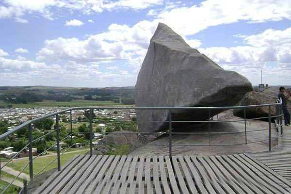
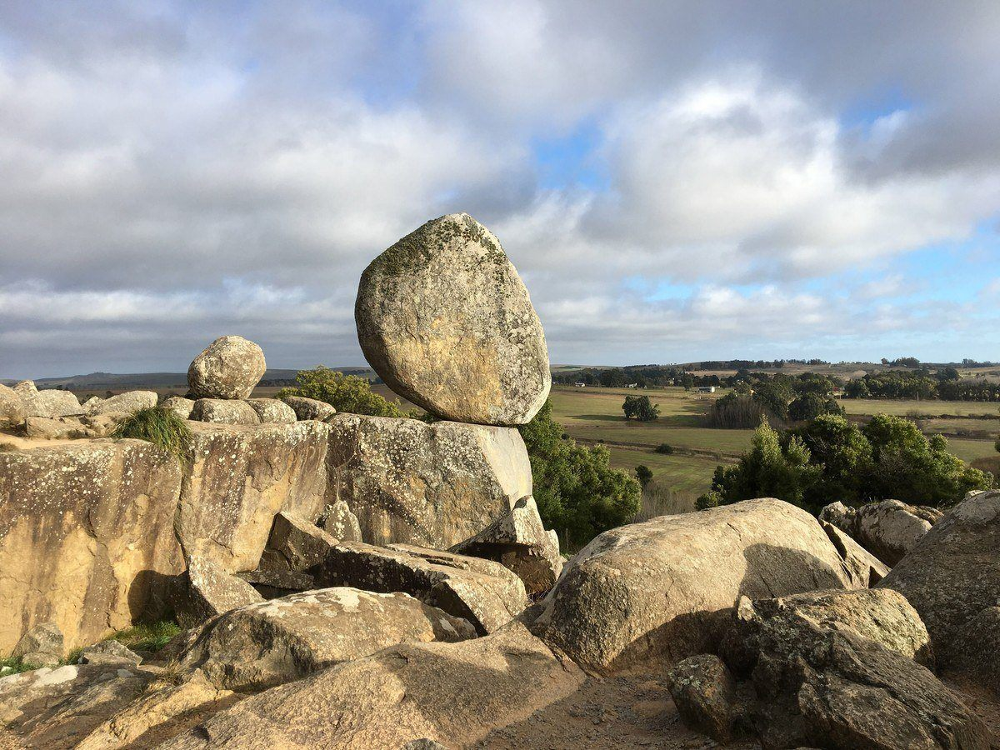
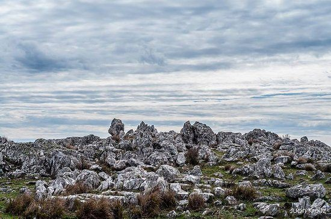
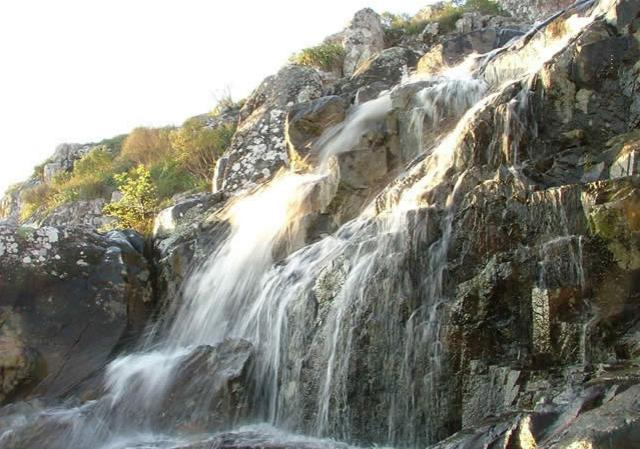
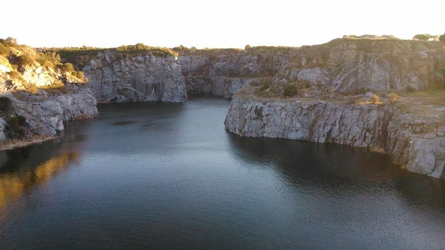
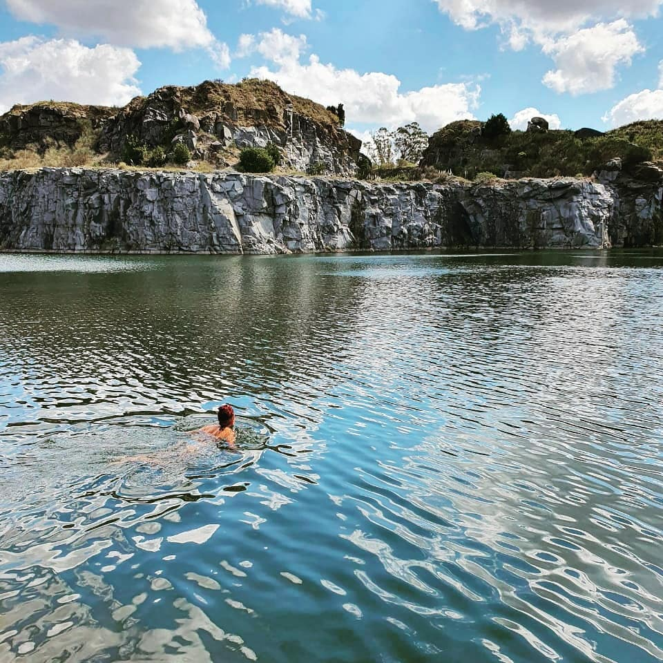
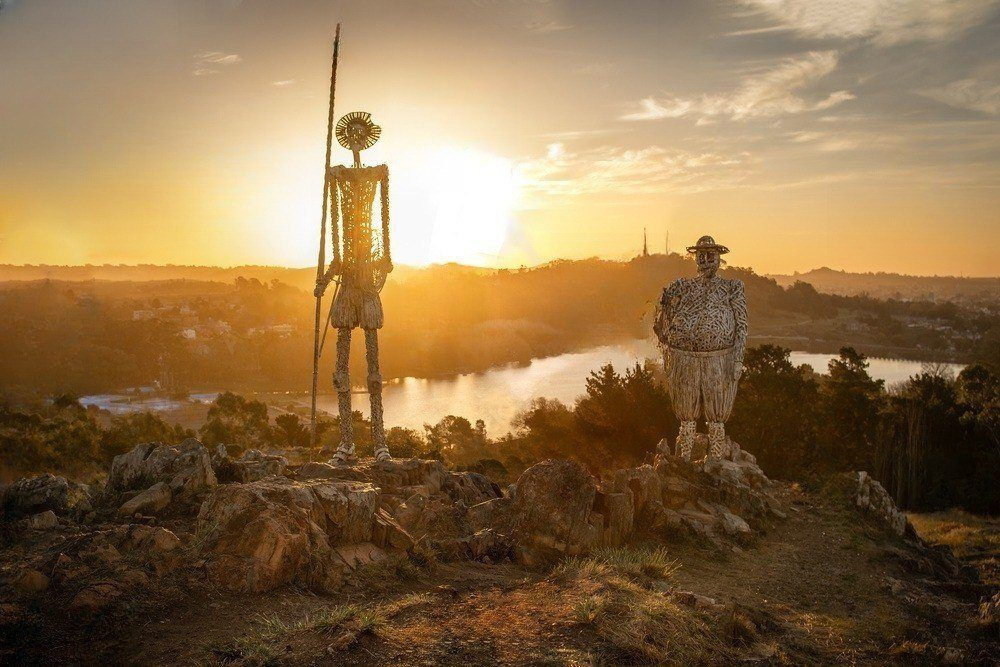
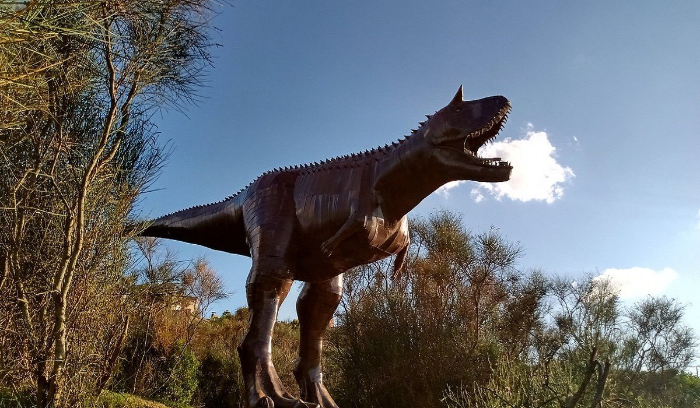
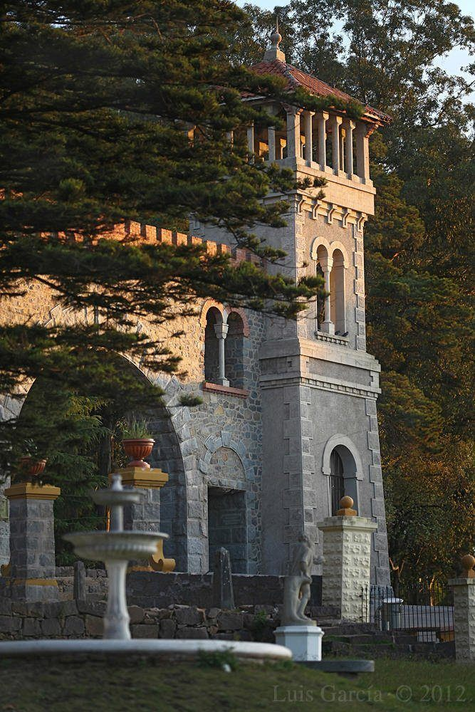
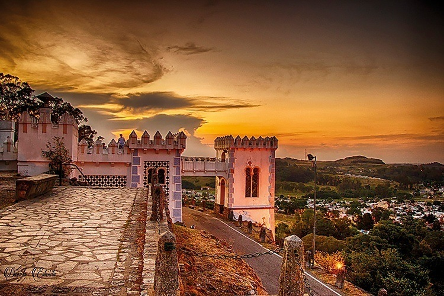

Lugares turisticos en Tandil
Desde sus imponentes sierras hasta sus encantadoras plazas y calles empedradas, cada rincón de esta ciudad respira un aire de tradición y encanto. Descubre los tesoros ocultos de Tandil, donde la aventura y la serenidad se entrelazan en un viaje inolvidable.

piedra movediza

cerro centinela

sierra las animas

cascada

cavas

cavas

calvario

lago del fuerte

don quijote
parque del origen

parque del origen

portada del parque
